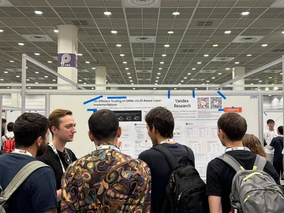

Карина Романова, которая занимается LLM-агентами в Алисе, поделилась впечатлениями от ICML на Хабре. В тексте рассказывается и о статьях, и о воркшопах, и об организации мероприятия — обязательно почитайте. А здесь — о трёх исследованиях Яндекса, которые представили на конференции и которые отметила Карина.
On Efficient Scaling of GNNs via IO-Aware Layers Implementations
Когда мы пытаемся ускорить GNN на GPU, сразу хочется оптимизировать математические вычисления. На практике же выясняется, что GNN чаще упираются не в compute, а в память и скорость передачи данных.
Авторы разобрали популярные семейства графовых моделей, нашли их узкие места при работе с памятью и адаптировали низкоуровневые GPU-оптимизации под особенности графовых данных, по сути, применив IO-aware-подход, похожий на идеи из FlashAttention.
Что получилось
Для GATv2: кастомные GPU-ядра показали ускорение до 8,5 раз относительно библиотеки DGL (медиана — в два раза), а пиковое потребление памяти снизилось до 76 раз (медиана — в шесть раз).
Для Graph Transformer: отдельная block-sparse-реализация под Tensor Cores ускорила работу до 7,3 раза на локально плотных графах.
GraphPFN: A Prior-Data Fitted Graph Foundation Model
Воркшоп был посвящён развитию graph foundation models — переходу от узкоспециализированных моделей для отдельных задач к универсальным foundation-моделям для работы с графами. Сама статья о GraphPFN, к слову, получила Best Paper Award.
Как устроена GraphPFN
— В основе — подход PFN: модель развивает концепцию Prior-Data Fitted Networks.
— GraphPFN предобучают на миллионах специально сгенерированных синтетических графов.
— Благодаря синтетическому претрейну модель умеет работать с реальными графами прямо «из коробки» в режиме in-context learning без долгого переобучения или после минимального файнтюнинга.
— Результаты: на широком наборе реальных графовых датасетов GraphPFN показала лучшие результаты среди протестированных в работе подходов.
В рамках того же воркшопа Людмила Прохоренкова из Yandex Research участвовала в панельной дискуссии о будущем graph foundation-моделей вместе с исследователями из RWTH Aachen, Georgia Tech и Arizona State University. На панельной дискуссии обсуждались последние достижения, открытые проблемы и перспективные направления развития графовых foundation-моделей.
Weight-Space Geometry of Offline Reasoning Training
Обычно offline RL-лоссы для RFT, RIFT, DFT, Offline GRPO и DPO сравнивают с SFT по финальной accuracy. Мы решили посмотреть на другую сторону этих методов: насколько различаются изменения, которые они вносят в модель.
Как проводили эксперимент
Чтобы сравнение было честным, мы зафиксировали условия:
— Взяли единый набор математических rollout’ов.
— Обучили все шесть методов на модели Qwen3-4B-Instruct с attention-only LoRA.
— Сравнили получившиеся LoRA-дельты (ΔW).
Что получилось
Оказалось, что у SFT, RFT и RIFT эти дельты направлены почти в одну сторону, хотя их величина различается. DFT отклоняется от этого направления заметно сильнее, а у Offline GRPO около 67% апдейта глобально и до 86% в последних слоях приходится на компоненту, ортогональную направлению SFT.
DPO занимает почти отдельное подпространство и показывает лучшую accuracy в нашем протоколе. Однако его обучали с learning rate в десять раз меньше и на меньшем числе примеров, поэтому разницу нельзя объяснять только устройством лосса.
Получается, что разные методы могут сильно различаться по формуле, но в контролируемом эксперименте приводить к неожиданно близким направлениям адаптации весов. При этом важно учесть, что вывод относится именно к фиксированным математическим rollout’ам, Qwen3-4B-Instruct и attention-only LoRA, а не ко всем весам и сценариям обучения вообще.
#YaICML2026
ML Underhood
